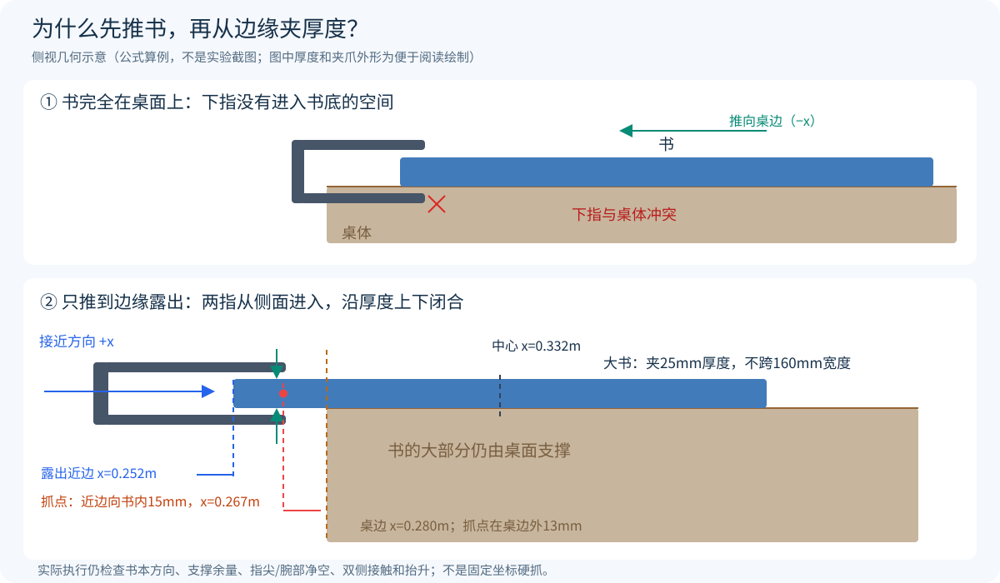

本文按“看见什么→目标在哪里→底盘停哪里→夹爪怎么去→怎样夹住→如何确认完成”解释实现。所有描述对应当前代码；数学算例用于说明计算，不冒充新增物理实验。
| 名称 | 含义 | 本项目中的例子 |
|---|---|---|
| 底盘位姿 | 底盘在地面上的位置和朝向(x,y,yaw) |
先到书桌前，再到抽屉柜前 |
关节状态q |
UR5六个关节实际角度，单位rad | 肩、肘、腕的六维角度 |
末端位姿(p,R) |
夹爪夹持参考点的位置和方向 | 到书边某一点，并使两指上下闭合 |
| TCP | 用于定位夹爪的参考点 | 源码中的grip_pinch，不是腕关节中心 |
| 高层动作 | 控制器下一步要达到的目标 | 六关节绝对目标+夹爪开合量 |
执行器控制量ctrl |
实际送给MuJoCo执行器的命令 | 含限速和重力前馈的关节位置目标、轮速、夹爪指令 |
位置回答“到哪里”，方向回答“以什么姿态接近”。同一空间点，夹爪从上方接近和从侧面接近，会对应不同关节解和碰撞关系。
坐标约定： 世界坐标固定在场景中，底盘坐标随车移动，工具坐标随夹爪移动。比较两个位置前先确认它们使用同一坐标系。
系统有两条实际执行路径：传统完整任务用规则、几何规划和FSM生成动作；当前VLA短技能用图像、状态和语言预测关节目标。二者最终都走正常执行器与物理接触，不通过重设物体位置完成操作。
前方相机输出RGB和同视角深度。当前传统感知使用设定颜色的阈值分割：苹果红、香蕉黄、橘子橙；书本有不同封面色。连通域把相邻像素组合成候选物体，相邻像素深度差超过35mm时不继续连接，减少前后物体误并。
这属于适用于当前可控颜色场景的工程视觉基线，没有使用训练出的通用物体检测器。相近颜色、遮挡、反光和粘连仍会限制效果。圆形水果粘连分割有可选距离峰值分支，是否使用由对应回合配置决定，不能写成所有旧回合都采用。
设像素为(u,v)，其深度为D米，内参为焦距fx,fy和主点cx,cy：
X_camera = (u − cx) × D / fx
Y_camera = (v − cy) × D / fy
Z_camera = D
p_world = R_world_camera × p_camera + t_world_camera
前半段是反投影：把屏幕上的一个点沿相机射线还原到指定深度；后半段是坐标转换：把相机坐标中的点放回统一世界坐标。代码光学坐标为右/下/前，相对于MuJoCo相机坐标还做了轴向转换。焦距由虚拟相机视场角和图像尺寸计算，外参来自已知相机安装与机器人实际姿态。
因此“图像里在右边”与“世界坐标中x更大”不是同一个概念，尤其相机或底盘旋转后更不能混用。动作目标与机械臂正运动学必须在同一坐标系比较。
将候选像素全部反投影后，只保留桌面上方和工作区内的点。当前代码取98%高度分位数作为顶面高度，并用靠近顶面的点估计轮廓：水果带宽5mm，书本3mm。XY参考中心用顶面坐标3%和97%分位数的中点，减少少量边缘异常点影响。
对顶面XY点做PCA（主成分分析）：点分布最伸展的方向作为长轴，垂直方向作为短轴；沿这两轴的投影分位数估计长宽。书本按长×宽排序，香蕉主轴用于让两指优先沿较窄方向闭合。PCA轴没有天然“正向”，因此姿态候选还要考虑反向和旋转分支。
这里输出的是可见表面估计的操作参考。高度中心用(桌面高度+顶面高度)/2近似，不是从图像精确恢复物体质量重心；遮挡时估计面积也不等于完整真实面积。
| 分支 | 用于产生动作目标的信息 | 需要明确的范围 |
|---|---|---|
| 传统水果vision | RGB-D类别、中心、方向，及筐的标识观测 | 物体ID/接触/容纳真值用于关联记录与验证，不覆盖视觉目标位置 |
| 书本vision接口 | 颜色、深度、PCA与估计面积 | 接口已实现，但当前大书推抓成功基线不是该分支 |
| 当前大书推抓Oracle（仿真真值专家） | 书本实际中心、方向、尺寸与桌边几何 | 策略显式要求mode=oracle，不可描述成纯视觉自主侧抓 |
| 门/抽屉专家 | 已知门轴、把手和滑轨几何及实际关节状态 | 几何控制基线 |
| VLA | front/wrist RGB、实测六关节+夹爪、语言、时间 | 不输入隐藏目标位置；接触/真值只供评测保护 |
收纳筐的识别使用可区分的颜色标识和已知标识到筐中心的变换；当前没有把文字识别OCR描述为已完成模块。底盘定位与已知障碍地图来自仿真状态/场景定义，没有宣称实现SLAM。
传统专家的动作候选由规则生成，不是随机让手臂试碰：
当前候选评分是启发式几何评分，不是经过证明的抓取力闭合最优解。物理上是否夹牢，还要在执行后通过双侧接触、抬升和保持检查。
抓点决定指垫实际接触区域，末端姿态决定从哪里来和沿哪个方向闭合。对香蕉，沿全长夹持会超过开口或造成不合适接触；对书本，夹住边缘的厚度比跨越平面宽度更符合夹爪能力。
机器人控制的是grip_pinch目标，不是把机械臂腕心移动到物体中心。工具安装、指垫长度与参考点的偏移已经包含在机器人模型和IK中。
大书240×160×25mm的平面宽度超过夹爪开口，而25mm厚度可以夹。要上下夹住厚度，下指需要进入书底；书完全贴在桌面上时，下指没有进入空间。仅让TCP到达书边，并不能让腕部、指尖或相机支架穿过桌面。
因此动作链采用先推移创造桌边净空，再侧向进入夹厚度。推移是接触条件的准备，不是多余的搬动；也不是把整本书推落到桌外。
以下坐标属于当前书桌模型：桌面高度约0.725m，靠机器人一侧桌边为x=0.280m。Oracle专家读取书本实际姿态，从书的远侧（较大x一侧）用闭合夹爪推向近侧（−x）。
反馈推移以5mm指令增量前进，每步重新检查实际书边位置，最多80步。当前关键几何条件为：
x≤0.252m后停止，即名义上露出桌边约28mm。x<0.282m或中心高度跌到桌面以下触发失去支撑保护。这些是当前模型的几何阈值和反馈保护，不是质心始终位于支撑多边形内的完整稳定性证明。倾斜、过度旋转或跟踪失败仍按失败处理。
设当前书中心为c。默认从世界−x一侧沿+x接近：
h = 书本在通过中心的x方向直线上的真实半宽
p_grasp = [c_x − h + 0.015, c_y, c_z]
p_pre = p_grasp − [0.075, 0, 0]
也就是选书本边缘中段、从近边往里15mm的夹取位置；预抓取位于它外侧75mm。向内15mm给指垫接触面积，预留75mm用于摆正夹爪后再直线进入。TCP目标高度使用实际书中心；夹爪接近轴水平、闭合方向竖直，形成上指压书面、下指托书底的夹持。
斜书的h按实际矩形中线截面计算：min[(L/2)/|R00|, (W/2)/|R01|]，忽略平放条件下的零投影方向；不是投影外包围盒半宽。程序还要求p_grasp.x≤0.270m，确保抓点在桌边外侧留出下指空间。

公式算例，不是新实验： 一种对齐姿态下半宽80mm，推后中心x=0.332m，近边为0.252m，抓点为0.267m；抓点位于书内15mm，也在0.280m桌边之外13mm。夹取的是该处25mm厚度，不是160mm整宽。
最大书优先尝试沿其长边的法向接近，便于后续将书长轴对准抽屉：令n为书本平面短轴方向，取其正x朝向，抓点为c−n(W/2−0.015)，预抓取为该点再沿−n后退75mm。
该分支要求短轴在x方向的半宽投影至少32mm。推后不满足条件时，启用已配置的中线侧抓回退，并继续检查碰撞和入屉路径，不强行沿不可用方向夹取。书本长短边朝向不是固定不变的，不能把一个示意图当作所有随机姿态的固定抓点。
实际顺序为：推移后抬起推手→退底盘并张爪→到预抓取上方→经IK和关节路径降到预抓取位→前进75mm到抓点→闭合0.8秒→验证双侧接触→指令抬升100mm→检查实际抬升>55mm与保持状态。
书本保持检查采样0.6秒：双侧比例至少90%、工具坐标最大相对漂移<15mm，距离界限按书本半对角线+18mm计算。后续仍持续监控持物滑移；抓取成功没有免除运输和放置检查。
“底盘能到桌前”与“机械臂能完成动作”是两个条件。离目标太远会超出臂展，太近会造成肘/腕折叠、碰桌或关节接近限位。
操作位姿筛选在名义停靠点附近枚举小范围平移/偏航候选，在独立规划数据中放置候选底盘，依次检查预抓取、抓取或释放/退手等目标的IK与碰撞。可行候选按路径长度、关节运动量和限位余量排序。该评分是启发式，检查目标组随任务阶段定义，没有声称一次规划保证全部后续操作。
实际机器人不会被“放到”候选位置：选中候选后，先导航到预停靠位置，再由真实轮执行器Dock，最后根据实际停止位姿重新计算机械臂动作。规划副本中的假设位姿和运行中的物理控制必须分开。
正运动学用六个关节角计算夹爪在哪里；逆运动学反过来给定夹爪位置和方向，寻找六个关节角。对初学者可以理解为：目标指定“手放在书边并侧着夹”，IK负责分配肩、肘、腕该转多少。
源码根据MuJoCo雅可比矩阵计算当前位置/姿态误差对应的关节微调：
Δq = Jᵀ (J Jᵀ + λ² I)⁻¹ e
e是末端误差，J描述关节小幅转动怎样影响夹爪，阻尼λ让接近奇异姿态时求解更稳定。实现对旋转项用0.35权重、阻尼0.002，并限制单次更新及关节边界；这些是现有求解设置，不是动力学接触控制器。
同一个末端目标可对应不同肘部或腕部姿态。求解从当前关节、参考、历史成功解和若干预设配置开始；对收敛解检查限位、路径碰撞和运动代价，排除撞桌或折叠不合适的分支。
精确IK收敛要求位置误差<0.5mm、姿态误差<0.003rad。已有近似返回分支明确标记位置<3mm/姿态<0.01rad；仍须经过实际运动到位检查。求解得到的q*只是目标，不是机械臂已经移动完成。
s=3t²−2t³平滑插值（t是0到1的归一化进度），方向用四元数归一化线性插值；在2ms物理步长下，每20步（40ms）更新中间目标并求IK。每段结束读取真实关节/TCP误差。笛卡尔移动还能用实测关节重求IK、有限时间继续收敛；超过容差则报跟踪失败，不因规划器已给出解就进入下一状态。
夹爪空着通过某个空隙，不代表夹着240mm长书也能通过。规划器在副本中记录当前工具到书的相对变换，将书随候选工具位姿更新，再检查“手臂、夹爪、支架、书”的扫掠。
运行中的书仍是自由物体，靠真实接触保持；该规划假设没有被做成焊接约束。执行采用已检查路段，防止另一次不考虑持物关系的规划覆盖已检验路径。离散碰撞检查不等于连续时间无碰撞证明，所以实际执行仍保留保护。
决策由有限状态机和几何规则完成：每个状态读取当前目标/反馈，调用对应技能，并按完成条件、超时与有限重试转移。传统完整任务没有由VLA或语言模型决定底盘路线。
| 阶段 | 底盘做什么 | 机械臂做什么 | 如何协调 |
|---|---|---|---|
| 5m接近 | A*路点跟踪、真实四轮驱动 | 收拢保持 | 减少行驶时的外伸与碰撞 |
| 桌面驻车操作 | 停靠并保持锚点 | 接近、推书、抓取或放置 | 启用驻车配置时，稳定2秒后允许动作；漂移保护不靠固定基座 |
| 水果转运 | 按载荷类别限速前进/转向 | 默认周期性IK保持工具世界方向 | 末端XY随底盘局部偏置移动，Z保持；不是让夹爪在世界位置完全不动 |
| 大书特定转运 | 低速移到柜前预停靠位 | 最大书可用关节姿态保持 | 大书不一律套用水果世界方向保持；抬高持物组件清除把手后再接近 |
| 门圆弧 | 沿门轴切向跟随 | 按实际门角跟踪把手 | 门角是共同进度变量；接触/误差不合格则暂停或安全释放 |
| VLA抓取 | 驻车伺服与独立漂移保护 | 模型给关节与夹爪目标 | 模型不输出底盘动作 |
固定关节角时，机械臂会随底盘转向，夹爪也一起转。默认水果运输每10个物理步（20ms）检查底盘姿态，按保存的底盘局部XY偏置生成新的世界目标：
p_tool.xy = p_base.xy + Rz(yaw_base) × local_xy
p_tool.z = 保存的搬运高度
R_tool = 保存的世界方向
再用IK修正关节目标，保持工具方向而让位置随车走；遇到不可达或夹持异常立即停止。保存的方向、速度上限与实际夹持反馈共同约束搬运，不是底盘任意移动时机械臂都能无条件补偿。
门把手受机构约束，底盘需要边动边维持接触；桌上书的推抓要求稳定支撑，通常先停稳再操作。书取出后进入转运状态，才能解除驻车并开往抽屉柜。进入下一操作状态再重新驻车。
驻车使用车轮编码器和底盘位姿误差反馈给真实轮执行器做小幅修正，不锁死自由基座；超出漂移保护条件就停止。
配置决定是否启用stationary_manipulation；不能把新版驻车保护说成所有历史传统水果回合都已启用。当前最大书的关节保持分支，是为避免强行维持世界方向导致不可达；书随车转动，柜前再按书轴生成重新对齐和入屉姿态，它仍有完整持物碰撞与滑移检查。
保存起点 → 导航书桌 → 排序三本书
对最小/中等/最大依次循环：
去柜前 → 抓把手拉开对应层 → 释放并退出
回书桌 → 按当前书姿态推边/侧抓 → 检查抬升
带书去柜前 → 检查持物净空和屉开度
碰撞检查入屉路径 → 释放 → 退手 → 接触关屉
三书/三屉复核 → A*返回保存起点 → 独立评分
先开抽屉再拿书，是为了避免已占用的两指夹爪同时抓书和抓把手。实际屉开度在放置前仍要复核，防止运输中的接触把它推回。
水果任务则每次重新观察剩余目标，执行抓取、搬运、类别对应入筐和物理复核；当前目标选择是规则排序，不是全局最优旅行商规划。门任务按接近、外把手开门、整机过门、内把手关门和安全退手组织。
传统专家先得到几何目标，再经IK和轨迹生成关节动作。当前π₀.₅直接由前方/腕部RGB、实际六关节与夹爪、语言预测关节动作块，执行时不把隐藏目标坐标送入模型，也不在每个预测动作后额外跑几何抓取专家代替模型。
动作是六关节高层绝对目标+夹爪，按5Hz仿真节拍预测10步、执行1步（0.2秒），保留后续点用于插值后重新观测；关节限位、速度0.7rad/s及加速度1.4rad/s²由执行器接口检查。网络等待时仿真暂停，不宣称已满足实体机器人实时推理。
模型当前验证的是十果桌面中的指定目标抓起保持，不是导航或清空全部十件。完整传统任务、专家数据重放与学习模型闭环结果分别报告，不能用一种成功率替代另一种。
三个传统任务均有从起点执行完整流程的成功演示，以及各自封存的10回合评测；成功率和适用协议见原始固定评测。十果历史布局、新随机三书、Oracle正常门和VLA驻车不能合并成一个指标。本文说明实现方法，不承诺所有随机初态都完成。
传统方法复现所需源码、小型模型、许可证、依赖与运行命令随仓库提供。VLA完整权重、Tokenizer和原始训练数据未随GitHub发布，服务器快照和norm不等于完整模型；复现学习策略需要另行取得这些资产。具体入口见运行说明。